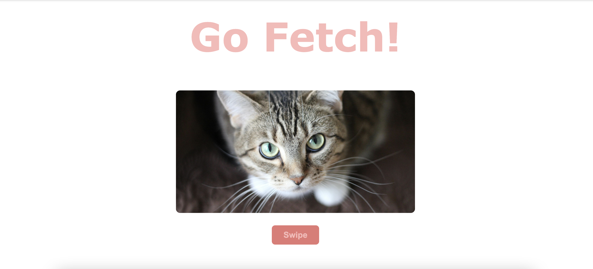
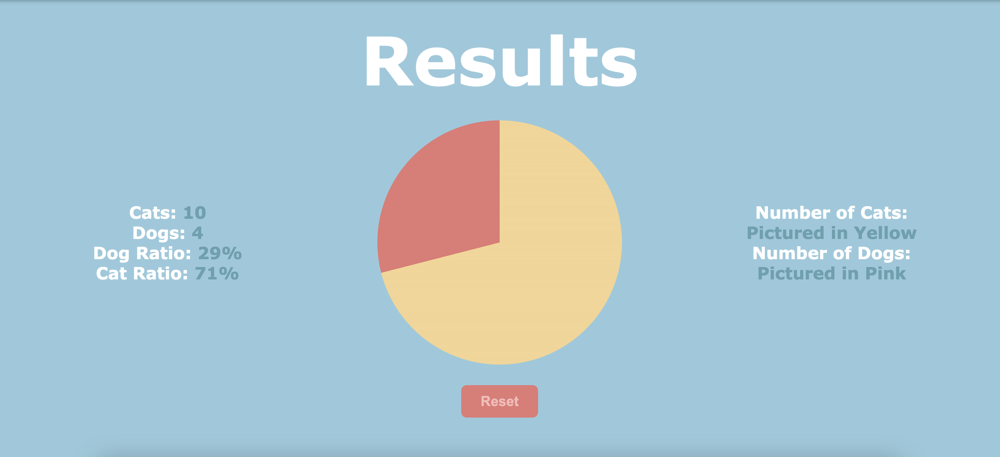

Final Project

Project Overview
How I accomplished the post:
This project explores the technology behind dating apps, specifically Tinder's recommendation algorithm and how it keeps users engaged through behavioral reinforcement. Dating apps are a form of everyday technology that millions of people interact with daily, yet the mechanisms behind them are often invisible to users. Tinder operates through a swipe-based interface where users swipe right to like someone or left to pass. When two users swipe right on each other, they form a match and can begin messaging. Behind this simple interface lies a recommendation system that determines which profiles are shown to users. The algorithm uses information such as location, user activity, and previous swiping behavior to predict which profiles a user is most likely to engage with. This project examines two major aspects of Tinder's technology:
The recommendation algorithm (TinVec): Algorithm that learns user preferences using machine learning. strong>Variable rate reinforcement: A behavioral design strategy that keeps users swiping by delivering rewards (matches) unpredictably. Together, these systems shape how people interact with the platform and influence how users perceive dating and connection in the digital age.
Core Technical Concept
Tinder's Recommendation Algorithm (TinVec)
Tinder uses a machine learning recommendation system called TinVec. This system converts user behavior into mathematical data representations called vectors. Every time a user interacts with the app, data points are generated. These include: Swiping behavior (likes and passes) Profile information (bio, interests, photos) Activity level Geographic proximity to other users TinVec transforms this information into vectors that represent user preferences and characteristics. When two users have vectors that are close together in this multidimensional space, the algorithm considers them more compatible and is more likely to show them to each other. The system also analyzes language in user profiles using techniques similar to Word2Vec, allowing it to identify similarities in communication style or interests. As users continue swiping, the algorithm continuously updates its understanding of their preferences and refines the profiles it recommends.
Variable Rate Reinforcement
Another key technical concept behind dating apps is variable rate reinforcement, a principle from behavioral psychology. In a variable reinforcement schedule: Rewards are delivered unpredictably. Users do not know when the next reward will occur. On Tinder, the reward is a match or a right swipe from another user. Instead of receiving matches at predictable intervals, users receive them at irregular times. This unpredictability increases engagement because the brain releases more dopamine when rewards are uncertain. This mechanism is similar to the reinforcement patterns used in slot machines, where unpredictable rewards keep people playing longer. In the context of dating apps, this design encourages users to keep swiping in anticipation of the next match.
Multimedia Demonstration


Prototype Implementation
The technical exploration for this project involved examining how swipe-based recommendation systems function. We built a simplified prototype that simulates the swipe interface and demonstrates how user actions generate data used for recommendations. The full project code is available on GitHub:
Deconstruction - Philosophical Reflection
Metaphysical Questions About Dating Algorithms
One philosophical framework that shaped our thinking about dating apps is metaphysics, particularly questions about the nature of love and connection. Dating apps attempt to quantify compatibility using measurable attributes such as interests, location, age, and communication style. However, metaphysical discussions of love suggest that these concepts are much more complex. For example, classical philosophical discussions distinguish between different forms of love: Eros (romantic or passionate love), Philia (friendship and companionship), Agape (unconditional or universal love) Dating algorithms attempt to model compatibility mathematically, but these philosophical perspectives raise questions about whether something as complex as love can be reduced to data points. If we cannot clearly define what creates love or long-term connection, it becomes difficult to determine whether an algorithm can successfully predict it.
Discussion Questions from our Presentation:
Why do relationships that begin on dating apps sometimes carry social stigma? Is a relationship formed through an algorithm less authentic than one formed through a chance meeting? Have dating apps changed how people think about love and compatibility? Does the concept of an algorithmic “match” influence how users evaluate potential partners? If every profile on Tinder resulted in a match, would users continue using the app?
Reflection on In-Class Discussion
Leading the discussion helped us think more critically about the relationship between algorithms and human connection. One point raised in class during discussion was that dating apps may not actually create connections but instead increase the probability of meeting people who might otherwise never cross paths. This idea reframed our thinking about the role of the algorithm. Rather than directly forming relationships, the algorithm functions more like a filter that expands who we interact with. Someone else mentioned that dating apps change users' expectations of relationships by giving an endless stream of potential matches. This can create the perception that there is always someone better available, which may influence how users evaluate partners. These discussions highlighted that the impact of dating apps may not lie solely in their algorithms, but in how they reshape social norms around relationships and compatibility.
Philosophical Framework NOT Covered in Classs
One philosophical perspective that extends this discussion is existentialism, particularly the idea that meaning is created through human choice rather than predetermined systems. From an existentialist perspective, algorithms cannot determine meaningful relationships because meaning emerges through lived experiences and individual decisions. Even if an algorithm identifies statistically compatible individuals, the outcome of the relationship ultimately depends on the choices and interactions of the people involved. This perspective suggests that while algorithms may help initiate encounters, they cannot replace the human process of creating meaning within relationships.
Reflection on Other Students' Projects
Other projects presented in class also influenced how I thought about everyday technology. One example was the project on the Oura Ring, which explored how wearable devices collect data and use models to interpret user movement and activity patterns. The project explained how the device builds a model to track movement and estimate things like sleep quality, steps, and overall health. This made me think about how everyday technologies increasingly rely on data modeling to interpret human behavior. In the case of the Oura Ring, the system collects physical data such as movement and heart rate and uses algorithms to convert those signals into meaningful metrics about health. Similarly, Tinder's algorithm collects behavioral data such as swipes, matches, and profile interactions to build a model of user preferences. Seeing the Oura Ring project highlighted how different technologies rely on similar computational ideas: turning human behavior into data that can be analyzed and predicted. However, it also made me think about the differences in purpose.
Citations
- Wordie, Fred. 2020. “An Unscientific Investigation of Tinder's Algorithm.” Medium. AIxDESIGN. September 9, 2020. https://medium.com/aixdesign/an-unscientific-investigation-of-tinders-algorithm-2c086bf3deb4.
- Spinney, Laura. 2024. “'The Science Isn't There': Do Dating Apps Really Help Us Find Our Soulmate?” The Observer, April 28, 2024, sec. Technology. https://www.theguardian.com/technology/2024/apr/28/the-science-isnt-there-do-dating-apps-really-help-us-find-our-soulmate.